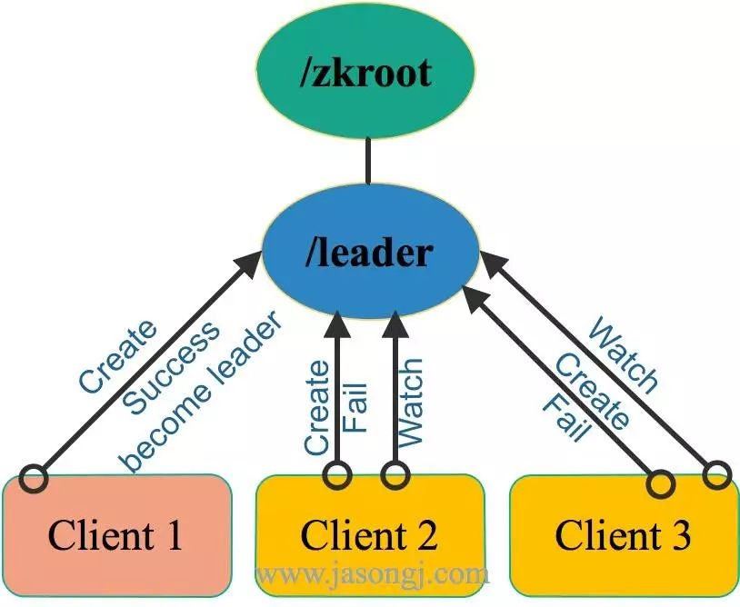
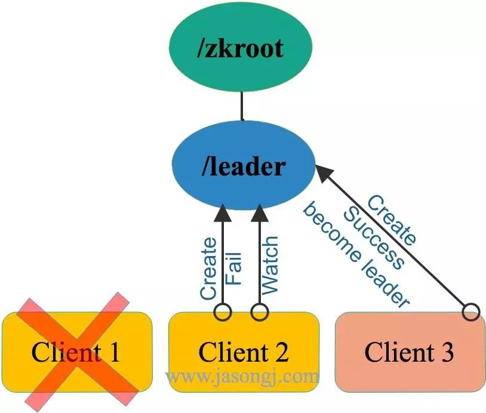
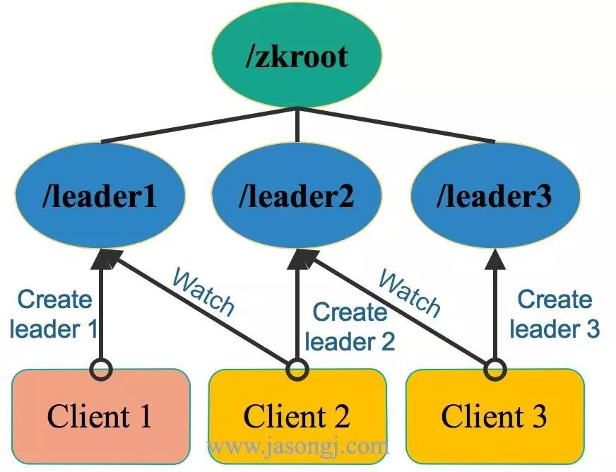
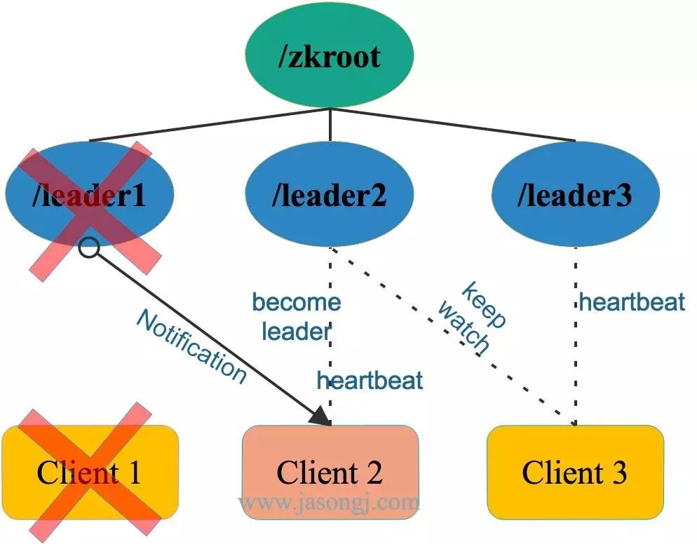
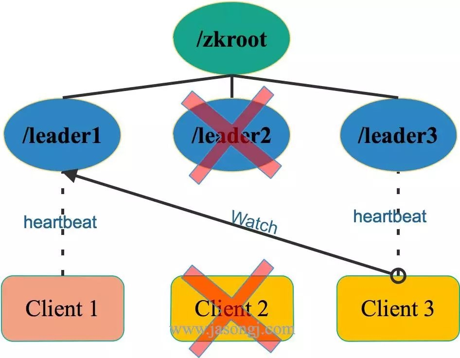

ZooKeeper节点类型
ZooKeeper 提供了一个类似于 Linux 文件系统的树形结构。该树形结构中每个节点被称为 znode ，可按如下两个维度分类：
- 1、Persist vs. Ephemeral
- Persist节点，一旦被创建，便不会意外丢失，即使服务器全部重启也依然存在。每个 Persist 节点即可包含数据，也可包含子节点
- Ephemeral节点，在创建它的客户端与服务器间的 Session 结束时自动被删除。服务器重启会导致 Session 结束，因此 Ephemeral 类型的 znode 此时也会自动删除
- 2、Sequence vs. Non-sequence
- Non-sequence节点，多个客户端同时创建同一 Non-sequence 节点时，只有一个可创建成功，其它匀失败。并且创建出的节点名称与创建时指定的节点名完全一样
- Sequence节点，创建出的节点名在指定的名称之后带有10位10进制数的序号。多个客户端创建同一名称的节点时，都能创建成功，只是序号不同
ZooKeeper语义保证
ZooKeeper简单高效，同时提供如下语义保证，从而使得我们可以利用这些特性提供复杂的服务。
- 顺序性：客户端发起的更新会按发送顺序被应用到 ZooKeeper 上
- 原子性：更新操作要么成功要么失败，不会出现中间状态
- 单一系统镜像：一个客户端无论连接到哪一个服务器都能看到完全一样的系统镜像（即完全一样的树形结构）。注：根据上文《ZooKeeper架构及FastLeaderElection机制》介绍的 ZAB 协议，写操作并不保证更新被所有的 Follower 立即确认，因此通过部分 Follower 读取数据并不能保证读到最新的数据，而部分 Follwer 及 Leader 可读到最新数据。如果一定要保证单一系统镜像，可在读操作前使用 sync 方法。
- 可靠性：一个更新操作一旦被接受即不会意外丢失，除非被其它更新操作覆盖
- 最终一致性：写操作最终（而非立即）会对客户端可见
ZooKeeper Watch机制
所有对 ZooKeeper 的读操作，都可附带一个 Watch 。一旦相应的数据有变化，该 Watch 即被触发。
Watch 有如下特点：
- 主动推送：Watch被触发时，由 ZooKeeper 服务器主动将更新推送给客户端，而不需要客户端轮询。
- 一次性：数据变化时，Watch 只会被触发一次。如果客户端想得到后续更新的通知，必须要在 Watch 被触发后重新注册一个 Watch。
- 可见性：如果一个客户端在读请求中附带 Watch，Watch 被触发的同时再次读取数据，客户端在得到 Watch 消息之前肯定不可能看到更新后的数据。换句话说，更新通知先于更新结果。
- 顺序性：如果多个更新触发了多个 Watch ，那 Watch 被触发的顺序与更新顺序一致。
分布式锁与领导选举关键点
1、最多一个获取锁 / 成为Leader
对于分布式锁（这里特指排它锁）而言，任意时刻，最多只有一个进程（对于单进程内的锁而言是单线程）可以获得锁。
对于领导选举而言，任意时间，最多只有一个成功当选为Leader。否则即出现脑裂（Split brain）
###2、锁重入 / 确认自己是Leader
对于分布式锁，需要保证获得锁的进程在释放锁之前可再次获得锁，即锁的可重入性。
对于领导选举，Leader需要能够确认自己已经获得领导权，即确认自己是Leader。
3、释放锁 / 放弃领导权
锁的获得者应该能够正确释放已经获得的锁，并且当获得锁的进程宕机时，锁应该自动释放，从而使得其它竞争方可以获得该锁，从而避免出现死锁的状态。
领导应该可以主动放弃领导权，并且当领导所在进程宕机时，领导权应该自动释放，从而使得其它参与者可重新竞争领导而避免进入无主状态。
###4、感知锁释放 / 领导权的放弃
当获得锁的一方释放锁时，其它对于锁的竞争方需要能够感知到锁的释放，并再次尝试获取锁。
原来的Leader放弃领导权时，其它参与方应该能够感知该事件，并重新发起选举流程。
非公平领导选举
从上面几个方面可见，分布式锁与领导选举的技术要点非常相似，实际上其实现机制也相近。这里以领导选举为例来说明二者的实现原理，分布式锁的实现原理也几乎一致。
###1、选主过程
假设有三个ZooKeeper的客户端，如下图所示，同时竞争Leader。这三个客户端同时向ZooKeeper集群注册Ephemeral且Non-sequence类型的节点，路径都为 /zkroot/leader（工程实践中，路径名可自定义）。

如上图所示，由于是Non-sequence节点，这三个客户端只会有一个创建成功，其它节点均创建失败。此时，创建成功的客户端（即上图中的Client 1）即成功竞选为 Leader 。其它客户端（即上图中的Client 2和Client 3）此时匀为 Follower。
2、放弃领导权
如果 Leader 打算主动放弃领导权，直接删除 /zkroot/leader 节点即可。
如果 Leader 进程意外宕机，其与 ZooKeeper 间的 Session 也结束，该节点由于是Ephemeral类型的节点，因此也会自动被删除。
此时 /zkroot/leader 节点不复存在，对于其它参与竞选的客户端而言，之前的 Leader 已经放弃了领导权。
3、感知领导权的放弃
由上图可见，创建节点失败的节点，除了成为 Follower 以外，还会向 /zkroot/leader 注册一个 Watch ，一旦 Leader 放弃领导权，也即该节点被删除，所有的 Follower 会收到通知。
###4、重新选举
感知到旧 Leader 放弃领导权后，所有的 Follower 可以再次发起新一轮的领导选举，如下图所示。

从上图中可见：
- 新一轮的领导选举方法与最初的领导选举方法完全一样，都是发起节点创建请求，创建成功即为 Leader，否则为 Follower ，且 Follower 会 Watch 该节点
- 新一轮的选举结果，无法预测，与它们在第一轮选举中的顺序无关。这也是该方案被称为非公平模式的原因
###小结
非公平模式实现简单，每一轮选举方法都完全一样
竞争参与方不多的情况下，效率高。每个 Follower 通过 Watch 感知到节点被删除的时间不完全一样，只要有一个 Follower 得到通知即发起竞选，即可保证当时有新的 Leader 被选出
给ZooKeeper 集群造成的负载大，因此扩展性差。如果有上万个客户端都参与竞选，意味着同时会有上万个写请求发送给 Zookeper。如《ZooKeeper架构》一文所述，ZooKeeper 存在单点写的问题，写性能不高。同时一旦 Leader 放弃领导权，ZooKeeper 需要同时通知上万个 Follower，负载较大。
公平领导选举
1、选主过程
如下图所示，公平领导选举中，各客户端均创建 /zkroot/leader 节点，且其类型为Ephemeral与Sequence。

由于是Sequence类型节点，故上图中三个客户端均创建成功，只是序号不一样。此时，每个客户端都会判断自己创建成功的节点的序号是不是当前最小的。如果是，则该客户端为 Leader，否则即为 Follower。
在上图中，Client 1创建的节点序号为 1 ，Client 2创建的节点序号为 2，Client 3创建的节点序号为3。由于最小序号为 1 ，且该节点由Client 1创建，故Client 1为 Leader 。
2、放弃领导权
Leader 如果主动放弃领导权，直接删除其创建的节点即可。
如果 Leader 所在进程意外宕机，其与 ZooKeeper 间的 Session 结束，由于其创建的节点为Ephemeral类型，故该节点自动被删除。
3、感知领导权的放弃
与非公平模式不同，每个 Follower 并非都 Watch 由 Leader 创建出来的节点，而是 Watch 序号刚好比自己序号小的节点。
在上图中，总共有 1、2、3 共三个节点，因此Client 2 Watch /zkroot/leader1，Client 3 Watch /zkroot/leader2。（注：序号应该是10位数字，而非一位数字，这里为了方便，以一位数字代替）
一旦 Leader 宕机，/zkroot/leader1 被删除，Client 2可得到通知。此时Client 3由于 Watch 的是 /zkroot/leader2 ，故不会得到通知。
重新选举
重新选举Client 2得到 /zkroot/leader1 被删除的通知后，不会立即成为新的 Leader 。而是先判断自己的序号 2 是不是当前最小的序号。在该场景下，其序号确为最小。因此Client 2成为新的 Leader 。

这里要注意，如果在Client 1放弃领导权之前，Client 2就宕机了，Client 3会收到通知。此时Client 3不会立即成为Leader，而是要先判断自己的序号 3 是否为当前最小序号。很显然，由于Client 1创建的 /zkroot/leader1 还在，因此Client 3不会成为新的 Leader ，并向Client 2序号 2 前面的序号，也即 1 创建 Watch。该过程如下图所示。

小结
- 实现相对复杂；
- 扩展性好，每个客户端都只 Watch 一个节点且每次节点被删除只须通知一个客户端；
- 旧 Leader 放弃领导权时，其它客户端根据竞选的先后顺序（也即节点序号）成为新 Leader，这也是公平模式的由来；
- 延迟相对非公平模式要高，因为它必须等待特定节点得到通知才能选出新的 Leader。